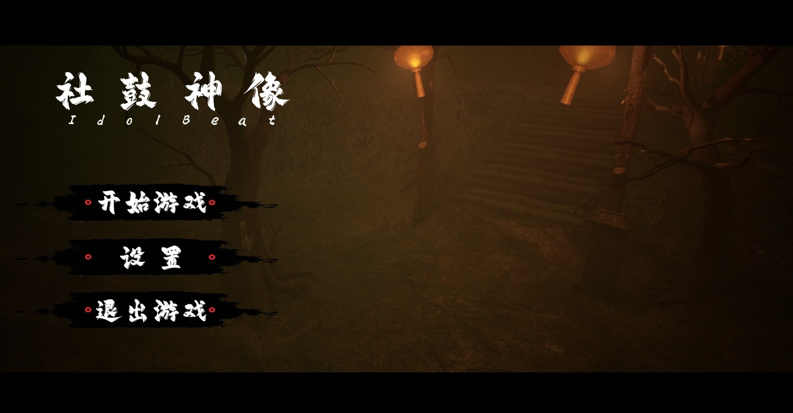

01
完整项目
《影戏》
以皮影戏与脸谱为视觉核心的横版2D动作探索游戏。玩家穿梭于不同节日戏台，收集脸谱能力，修复被邪祟侵蚀的“千面图谱”。
- 类型
- 2D动作探索
- 视觉核心
- 皮影 · 脸谱 · 节日
- 项目状态
- Demo已完成
- 展示内容
- 宣传片 · 关卡长卷
12人学生游戏创作团队
大嘴鸭游戏专注于有鲜明视觉表达的原创游戏。我们覆盖美术、程序、建模、动画、地编、UI与音效——毕竟PPT不会自己变成游戏。


从二维皮影到三维民俗恐怖
SELECTED PROJECTS
两个项目代表了团队不同的创作方向：一边探索皮影与传统节日的二维表达，一边尝试固定视角下的三维民俗恐怖体验。
完整项目
以皮影戏与脸谱为视觉核心的横版2D动作探索游戏。玩家穿梭于不同节日戏台，收集脸谱能力，修复被邪祟侵蚀的“千面图谱”。
21天Demo开发中
围绕社鼓、神像、村规与时间回溯展开的3D中式民俗恐怖解谜。固定视角让玩家像观察监控一样辨认异常，在“不要触碰”的规则中寻找真正的出口。
PROJECT SHOWCASE
从叙事开场到首领挑战，用74秒了解项目的视觉方向与基础玩法。
THE TEAM
我们按岗位明确职责，也让每个环节尽早同步。目标不只是“做过”，而是最终能展示、能播放、能交付。
4人
CONTACT
ONE LAST THING
这是网站唯一保留的不正经部分。后果不严重，大概。